固定样本 24900
原生20×20 → 400×400，整张画面不裁剪。三个模型均单次前向推理。
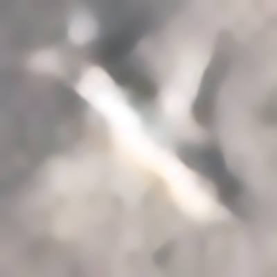
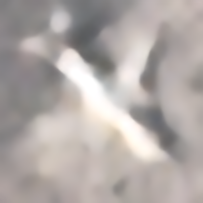
右侧固定为原模型；拖动滑块比较同一位置。
原始像素及普通插值

首轮尺度匹配训练已完成。合成配对测试有小幅改善，但固定五张真实20×20飞机图仍然明显模糊：没有观察到可靠的新细节恢复。中型模型的提升略多，目前不足以说明增加约7.4倍参数就能解决这一问题。
PlanesNet整图都是20×20，不等于飞机本身就是20×20。64张随机正类图由助手逐张估计：飞机可见框长边8–12像素约1.56%，12–16像素37.50%，16–20像素50%，10.94%无法可靠判断。可估样本的框面积占比中位数为60%，框内含背景。这是有标注误差的抽样估计，不能冒充8,000张的精确统计。
RarePlanes已核查全部8,525张切片；18,040次完整飞机标注中，框长边≤20像素占0.43%；若把“约20×20”定义为框宽高均在(16,24]，比例为2.82%。同一飞机可能在重叠切片重复出现。RESISC45的700张airplane类图中，600张检出1,112个候选框，100张未检出可信框；自动检测分布存在漏检偏差。
20×20输入、400×400参考，实际训练3,620对、验证493对、测试458对。训练来源为DOTA的445个飞机标注实例（45个场景组）和原有479个来源；增强版本不算新独立飞机。禁止将低清原图放大成高清真值，保留完整标注飞机区域，改变方向和位置，混合模糊、噪声、重采样与JPEG压缩。飞机粗标注区域权重提高；补边排除损失。只有25对可用的RarePlanes候选暂不参与训练。
轻量模型281,233参数；中型模型2,070,385参数。相同新数据、相同损失、相同2,000步预算，验证集决定权重。这里比较的是“新数据＋区域损失”的整体方案，不能把增益单独归因于某项增强。
相对原模型的平均PSNR变化，单位dB。RGB、剔除补边并裁去20像素边界；飞机区域是粗框。以下有合成高清参考，不能代表真实20像素图片的细节恢复准确率。
| 模型 | 测试来源 | 配对数 | 整图变化 | 飞机区域变化 | 选中步数 |
|---|---|---|---|---|---|
| 轻量模型＋新数据 | DOTA | 218 | +0.0819 | +0.1048 | 2000 |
| 轻量模型＋新数据 | 原有样本 | 240 | +0.0088 | +0.0137 | 2000 |
| 中型模型＋新数据 | DOTA | 218 | +0.1109 | +0.1420 | 2000 |
| 中型模型＋新数据 | 原有样本 | 240 | +0.0054 | +0.0122 | 2000 |
本轮所有8,000张PlanesNet飞机正类都由原模型、轻量新模型、中型新模型分别运行，共24,000份输出。完整结果保存在服务器；这里五张沿用训练前固定的展示样本。真实输入没有对应高清真值，不报告PSNR。
数据：Bob Hammell / PlanetScope；原作者，CC BY-SA 4.0，衍生图沿用相同许可。
原生20×20 → 400×400，整张画面不裁剪。三个模型均单次前向推理。


右侧固定为原模型；拖动滑块比较同一位置。
原生20×20 → 400×400，整张画面不裁剪。三个模型均单次前向推理。
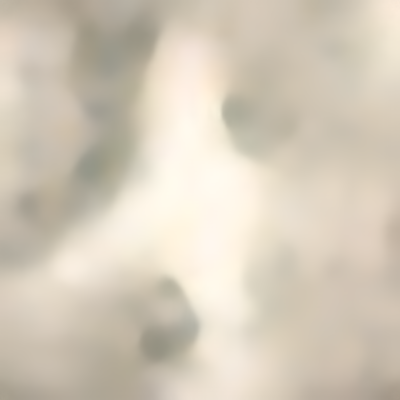
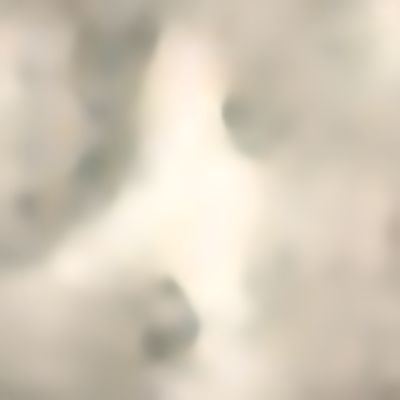
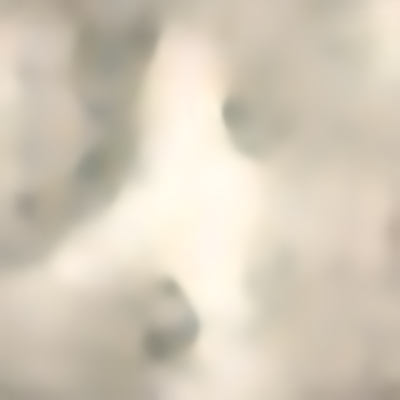
右侧固定为原模型；拖动滑块比较同一位置。

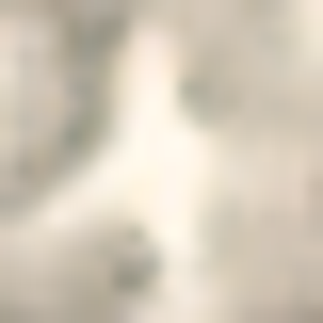
原生20×20 → 400×400，整张画面不裁剪。三个模型均单次前向推理。
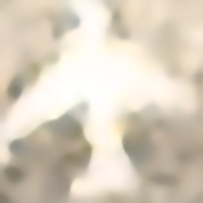
右侧固定为原模型；拖动滑块比较同一位置。

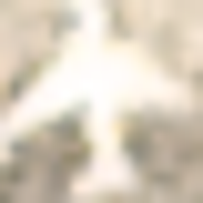
原生20×20 → 400×400，整张画面不裁剪。三个模型均单次前向推理。
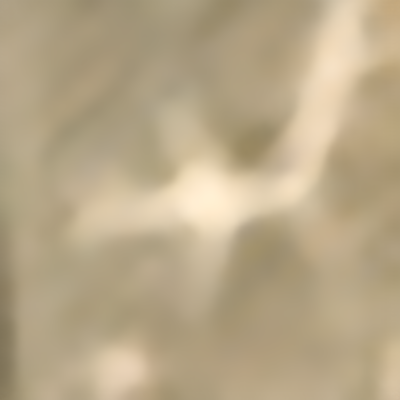
右侧固定为原模型；拖动滑块比较同一位置。

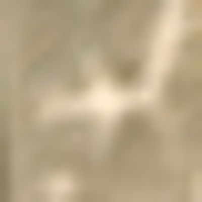
原生20×20 → 400×400，整张画面不裁剪。三个模型均单次前向推理。
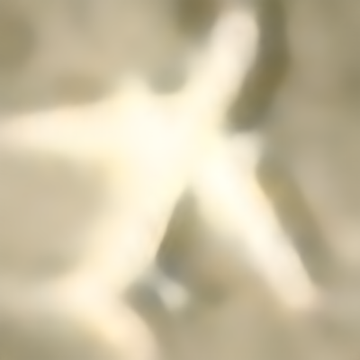
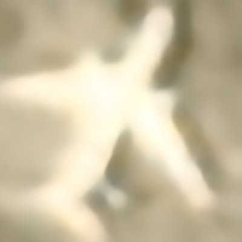
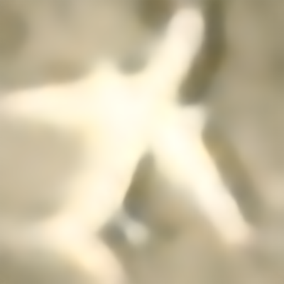
右侧固定为原模型；拖动滑块比较同一位置。

原始训练图最常见为1536×1024及旋转版本，宽高各在992–1586像素；保存的20倍低清整图宽高49–79像素。最早训练实际使用16→320的局部配对，上轮完整视野微调用20→400。2,400个高清图像版本属于600个来源家族，不能把增强和分辨率副本当成独立样本。
下载完整中文说明 · 查看本轮记录及校验值